第 1 页
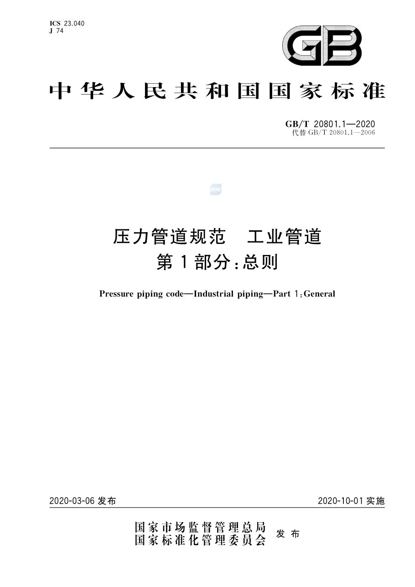
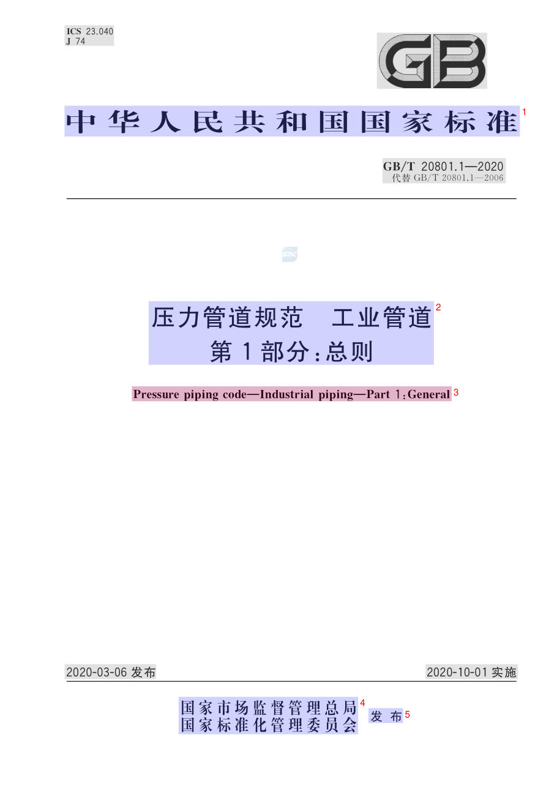
MinerU 解析文本
中华人民共和国国家标准
压力管道规范 工业管道第1部分:总则
Pressure piping code—Industrial piping—Part 1 : General
源文件：doc/GBT+20801.1-2020.pdf · 后端 pipeline · 未使用 VLM · 左侧原页 / 右侧版面检测框
$0 . 1 \ \mathrm { M P a }$），数值正确但含多余空格。text_level 标题目前没有映射成 chunk 的章节字段，这是当前实现的取舍。

Pressure piping code—Industrial piping—Part 1 : General
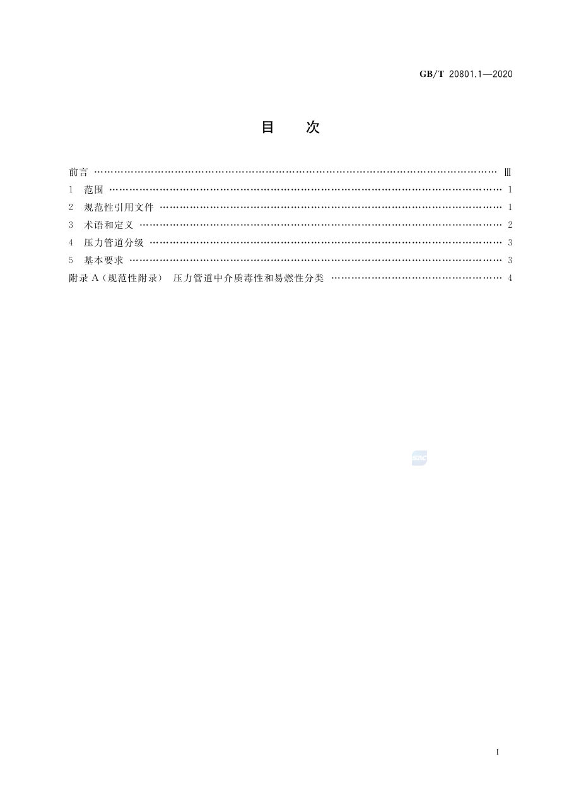
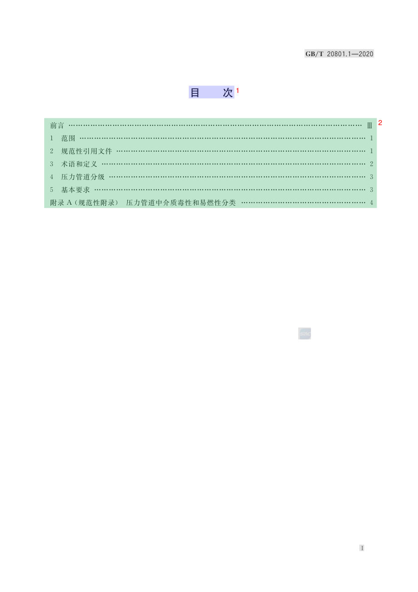
前言 1范围 2规范性引用文件 3术语和定义… 4压力管道分级· 5基本要求…… 附录A（规范性附录）压力管道中介质毒性和易燃性分类··
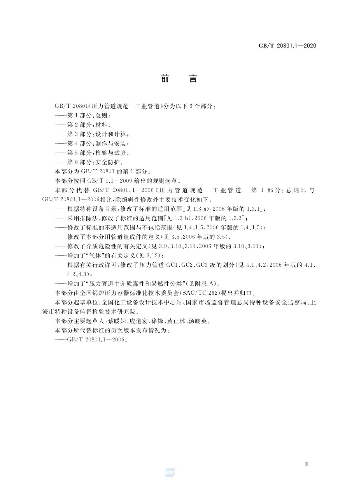
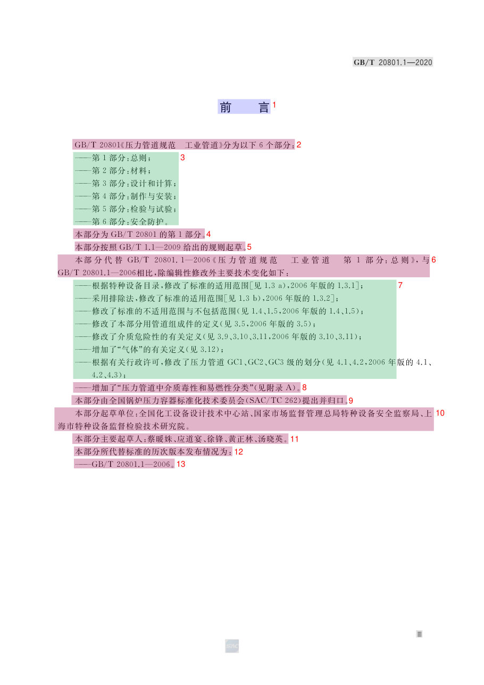
GB/T20801《压力管道规范工业管道》分为以下6个部分：
第1部分：总则； 第2部分：材料； 第3部分：设计和计算； 第4部分：制作与安装； 第5部分：检验与试验； 第6部分：安全防护。
本部分为GB/T20801的第1部分。
本部分按照GB/T1.1—2009给出的规则起草。
本部分代替GB/T20801.1—2006《压力管道规范工业管道第1部分：总则》，与GB/T20801.1—2006相比，除编辑性修改外主要技术变化如下：
根据特种设备目录，修改了标准的适用范围[见1.3a)，2006年版的1.3.1]； 采用排除法，修改了标准的适用范围[见1.3b)，2006年版的1.3.2]； 修改了标准的不适用范围与不包括范围（见1.4、1.5，2006年版的1.4、1.5)； 修改了本部分用管道组成件的定义（见3.5，2006年版的3.5）； 修改了介质危险性的有关定义（见3.9、3.10、3.11，2006年版的3.10、3.11）； 增加了“气体”的有关定义（见3.12）； 根据有关行政许可，修改了压力管道GC1、GC2、GC3级的划分（见4.1、4.2，2006年4.2、4.3);
增加了“压力管道中介质毒性和易燃性分类”（见附录A）。
本部分由全国锅炉压力容器标准化技术委员会（SAC/TC262)提出并归口。
本部分起草单位：全国化工设备设计技术中心站、国家市场监督管理总局特种设备安全监察局、上海市特种设备监督检验技术研究院。
本部分主要起草人：蔡暖姝、应道宴、徐锋、黄正林、汤晓英。
本部分所代替标准的历次版本发布情况为：
GB/T 20801.1—2006。
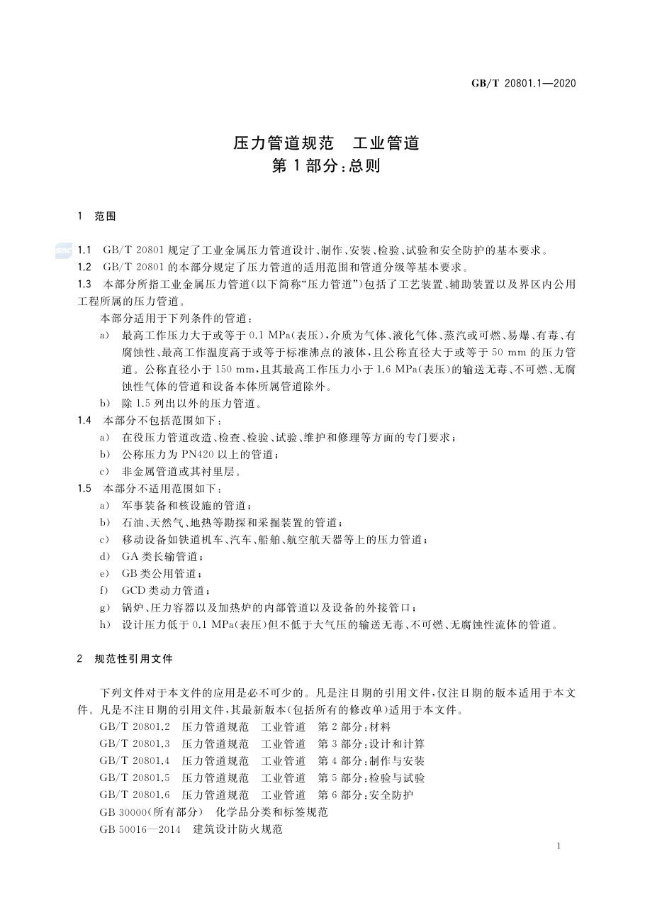
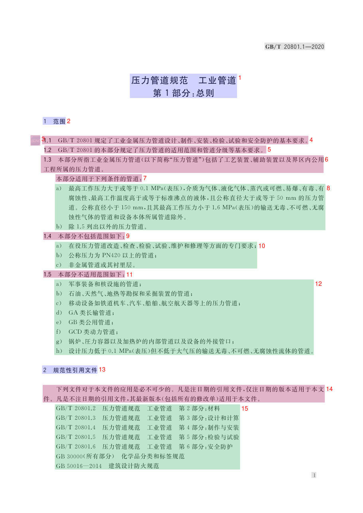
SAC
1.1GB/T20801规定了工业金属压力管道设计、制作、安装、检验、试验和安全防护的基本要求。
1.2GB/T20801的本部分规定了压力管道的适用范围和管道分级等基本要求。
1.3本部分所指工业金属压力管道(以下简称“压力管道”)包括了工艺装置、辅助装置以及界区内公用工程所属的压力管道。
本部分适用于下列条件的管道：
a）最高工作压力大于或等于 $0 . 1 \ \mathrm { M P a }$ （表压），介质为气体、液化气体、蒸汽或可燃、易爆、有毒、有腐蚀性、最高工作温度高于或等于标准沸点的液体，且公称直径大于或等于 $5 0 ~ \mathrm { m m }$ 的压力管道。公称直径小于 $1 5 0 \ \mathrm { m m }$ ，且其最高工作压力小于 $1 . 6 ~ \mathrm { M P a }$ （表压）的输送无毒、不可燃、无腐蚀性气体的管道和设备本体所属管道除外。 b）除1.5 列出以外的压力管道。
1.4本部分不包括范围如下：
a) 在役压力管道改造、检查、检验、试验、维护和修理等方面的专门要求； b) 公称压力为PN420以上的管道； c) 非金属管道或其衬里层。
1.5本部分不适用范围如下：
a) 军事装备和核设施的管道； b) 石油、天然气、地热等勘探和采掘装置的管道； c) 移动设备如铁道机车、汽车、船舶、航空航天器等上的压力管道； d) GA类长输管道； e) GB类公用管道； f) GCD类动力管道； g) 锅炉、压力容器以及加热炉的内部管道以及设备的外接管口； h) 设计压力低于 $0 . 1 \ \mathrm { M P a }$ （表压）但不低于大气压的输送无毒、不可燃、无腐蚀性流体的管道。
下列文件对于本文件的应用是必不可少的。凡是注日期的引用文件，仅注日期的版本适用于本文件。凡是不注日期的引用文件，其最新版本（包括所有的修改单)适用于本文件。
GB/T20801.2压力管道规范 工业管道第2部分：材料 GB/T20801.3压力管道规范 工业管道 第3部分：设计和计算GB/T20801.4 压力管道规范 工业管道 第4部分：制作与安装GB/T20801.5 压力管道规范 工业管道 第5部分：检验与试验GB/T20801.6压力管道规范工业管道第6部分：安全防护GB30000（所有部分）化学品分类和标签规范 GB50016—2014建筑设计防火规范
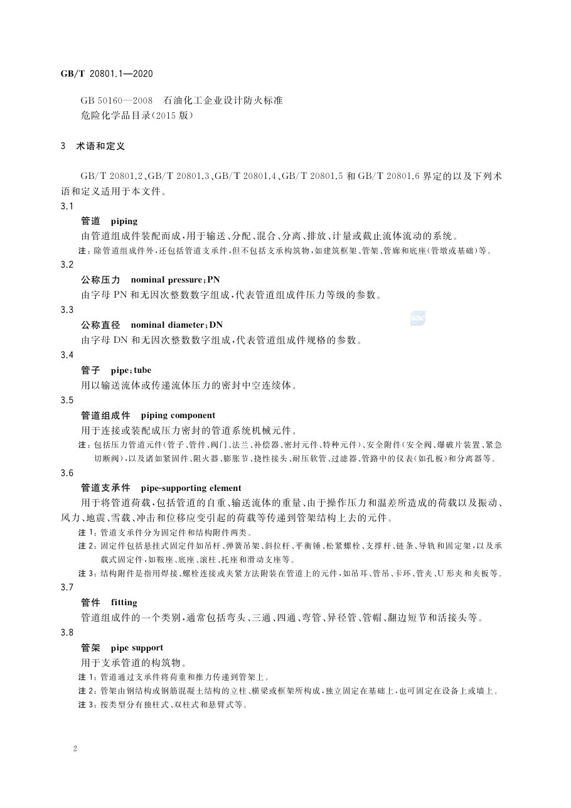
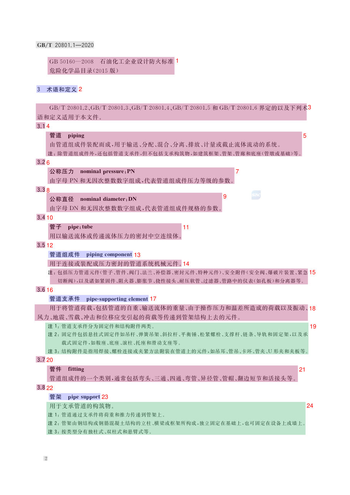
GB50160—2008石油化工企业设计防火标准危险化学品目录（2015版）
GB/T 20801.2、GB/T 20801.3、GB/T20801.4、GB/T 20801.5 和GB/T 20801.6 界定的以及下列术语和定义适用于本文件。
3.1
管道piping由管道组成件装配而成，用于输送、分配、混合、分离、排放、计量或截止流体流动的系统。注：除管道组成件外，还包括管道支承件，但不包括支承构筑物，如建筑框架、管架、管廊和底座（管墩或基础)等。
3.2
公称压力nominal pressure; PN由字母PN和无因次整数数字组成，代表管道组成件压力等级的参数。
3.3
公称直径nominal diameter; DN由字母DN和无因次整数数字组成，代表管道组成件规格的参数。
3.4
管子 pipe; tube用以输送流体或传递流体压力的密封中空连续体。
3.5
用于连接或装配成压力密封的管道系统机械元件。
主：包括压力管道元件（管子、管件、阀门、法兰、补偿器、密封元件、特种元件）、安全附件（安全阀、爆破片装置、紧急切断阀)，以及诸如紧固件、阻火器、膨胀节、挠性接头、耐压软管、过滤器、管路中的仪表(如孔板)和分离器等。
3.6
用于将管道荷载，包括管道的自重、输送流体的重量、由于操作压力和温差所造成的荷载以及振动、风力、地震、雪载、冲击和位移应变引起的荷载等传递到管架结构上去的元件。
注1：管道支承件分为固定件和结构附件两类。 注2：固定件包括悬挂式固定件如吊杆、弹簧吊架、斜拉杆、平衡锤、松紧螺栓、支撑杆、链条、导轨和固定架，以及承载式固定件，如鞍座、底座、滚柱、托座和滑动支座等。 注3：结构附件是指用焊接、螺栓连接或夹紧方法附装在管道上的元件，如吊耳、管吊、卡环、管夹、U形夹和夹板等。
3.7
管件fitting管道组成件的一个类别，通常包括弯头、三通、四通、弯管、异径管、管帽、翻边短节和活接头等。
3.8
用于支承管道的构筑物。 注1：管道通过支承件将荷重和推力传递到管架上。 注2：管架由钢结构或钢筋混凝土结构的立柱、横梁或框架所构成，独立固定在基础上，也可固定在设备上或墙上。 注3：按类型分有独柱式、双柱式和悬臂式等。
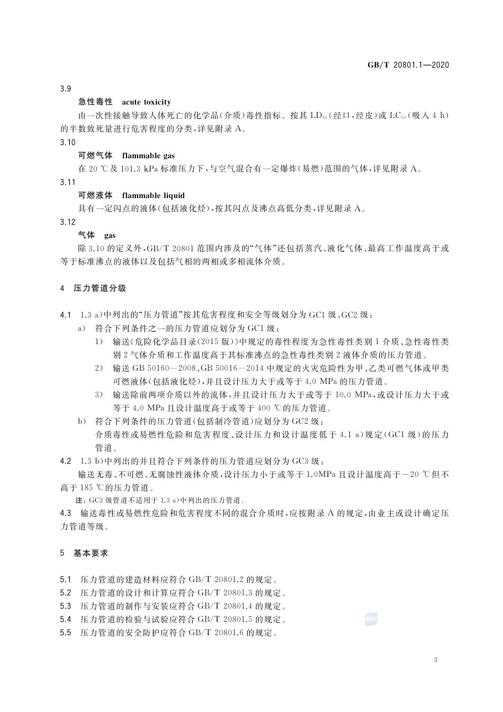
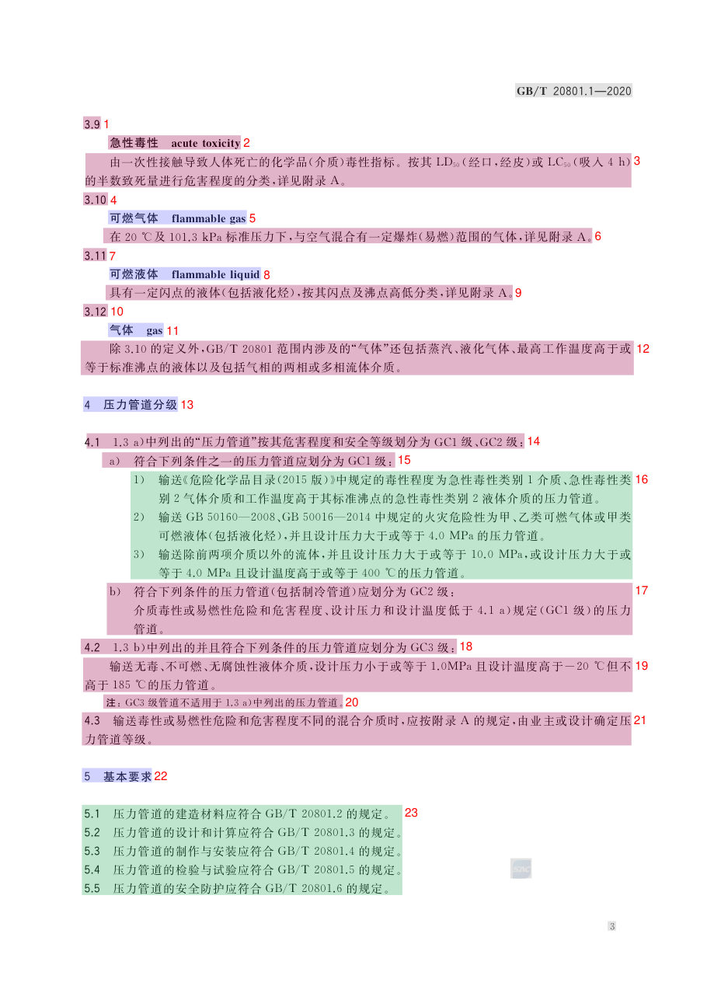
3.9
急性毒性acute toxicity
由一次性接触导致人体死亡的化学品（介质）毒性指标。按其 $\mathrm { L D } _ { 5 0 }$ （经口，经皮）或 $\mathrm { L C } _ { 5 0 }$ （吸入 $4 \ \mathrm { h } $ (d)的半数致死量进行危害程度的分类，详见附录A。
3.10
在 $2 0 ~ ^ { \circ } C$ 及 $1 0 1 . 3 \mathrm { ~ k P a }$ 标准压力下，与空气混合有一定爆炸（易燃)范围的气体，详见附录A。
3.11
具有一定闪点的液体(包括液化烃），按其闪点及沸点高低分类，详见附录A。
3.12
除3.10 的定义外，GB/T20801范围内涉及的“气体”还包括蒸汽、液化气体、最高工作温度高于或等于标准沸点的液体以及包括气相的两相或多相流体介质。
t.11.3a)中列出的“压力管道”按其危害程度和安全等级划分为GC1级、GC2级：
a）符合下列条件之一的压力管道应划分为GC1级：
1 输送《危险化学品目录（2015版）》中规定的毒性程度为急性毒性类别1介质、急性毒性类别2气体介质和工作温度高于其标准沸点的急性毒性类别2液体介质的压力管道。 2) 输送GB50160—2008、GB50016—2014中规定的火灾危险性为甲、乙类可燃气体或甲类可燃液体（包括液化烃），并且设计压力大于或等于 $4 . 0 \ \mathrm { M P a }$ 的压力管道。 3) 输送除前两项介质以外的流体，并且设计压力大于或等于 $1 0 . 0 \ \mathrm { M P a }$ ，或设计压力大于或等于 $4 . 0 \ \mathrm { M P a }$ 且设计温度高于或等于 $4 0 0 ~ \mathrm { ~ \textdegree C }$ 的压力管道。
b）符合下列条件的压力管道（包括制冷管道）应划分为GC2级：介质毒性或易燃性危险和危害程度、设计压力和设计温度低于4.1a）规定（GC1级）的压力管道。
4.2 $1 . 3 \mathrm { ~ b ~ }$ 中列出的并且符合下列条件的压力管道应划分为GC3级：
输送无毒、不可燃、无腐蚀性液体介质，设计压力小于或等于 $1 . 0 \mathrm { M P a }$ 且设计温度高于一 $2 0 ~ ^ { \circ } C$ 但不高于 $1 8 5 ~ \mathrm { ~ } ^ { \circ } \mathrm { C }$ 的压力管道。
注：GC3级管道不适用于1.3a)中列出的压力管道。
4.3输送毒性或易燃性危险和危害程度不同的混合介质时，应按附录A 的规定，由业主或设计确定压力管道等级。
5.1压力管道的建造材料应符合GB/T20801.2的规定。 5.2 压力管道的设计和计算应符合GB/T20801.3的规定。 5.3 压力管道的制作与安装应符合GB/T20801.4的规定。 5.4 压力管道的检验与试验应符合GB/T20801.5的规定。 5.5压力管道的安全防护应符合GB/T20801.6的规定。
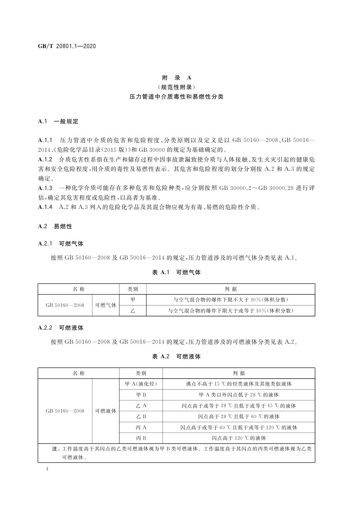
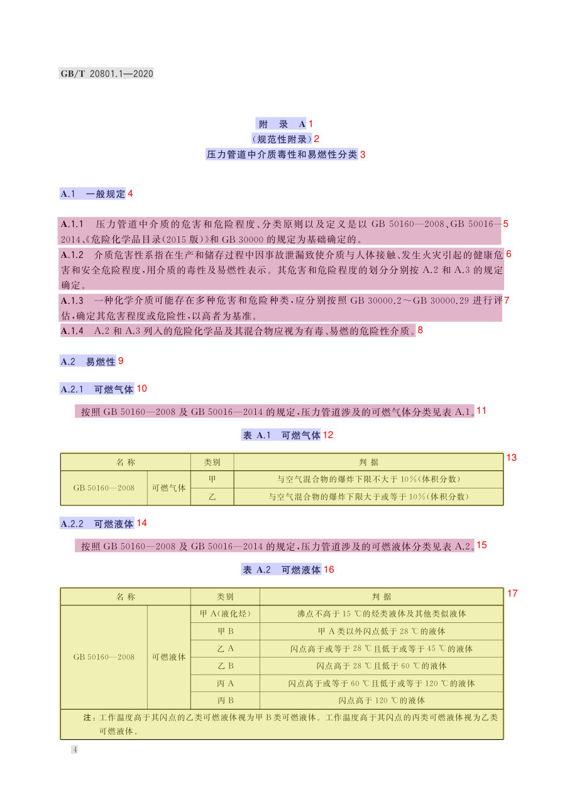
A.1.1压力管道中介质的危害和危险程度、分类原则以及定义是以GB50160—2008、GB50016—2014、《危险化学品目录（2015版）》和GB30000的规定为基础确定的。
A.1.2介质危害性系指在生产和储存过程中因事故泄漏致使介质与人体接触、发生火灾引起的健康危害和安全危险程度，用介质的毒性及易燃性表示。其危害和危险程度的划分分别按A.2 和A.3的规定确定。
A.1.3一种化学介质可能存在多种危害和危险种类，应分别按照 $\mathrm { G B ~ 3 0 0 0 0 . 2 } \sim \mathrm { G B ~ 3 0 0 0 0 . 2 9 }$ 进行评估，确定其危害程度或危险性，以高者为基准。
A.1.4A.2和A.3列入的危险化学品及其混合物应视为有毒、易燃的危险性介质。
按照GB 50160—2008及GB50016—2014的规定，压力管道涉及的可燃气体分类见表A.1。
名称 类别 判据 GB50160—2008 可燃气体 甲 与空气混合物的爆炸下限不大于10%(体积分数) 乙 与空气混合物的爆炸下限大于或等于10%(体积分数)
按照GB 50160—2008及GB50016—2014的规定，压力管道涉及的可燃液体分类见表A.2。
名称 类别 判据 GB50160—2008 可燃液体 甲A（液化烃） 沸点不高于15℃的烃类液体及其他类似液体 甲B 甲A类以外闪点低于28℃的液体 乙Ａ 闪点高于或等于28℃且低于或等于45℃的液体 乙B 闪点高于28℃且低于60℃的液体 丙A 闪点高于或等于60℃且低于或等于120℃的液体 丙B 闪点高于120℃的液体 注：工作温度高于其闪点的乙类可燃液体视为甲B类可燃液体。工作温度高于其闪点的丙类可燃液体视为乙类可燃液体。
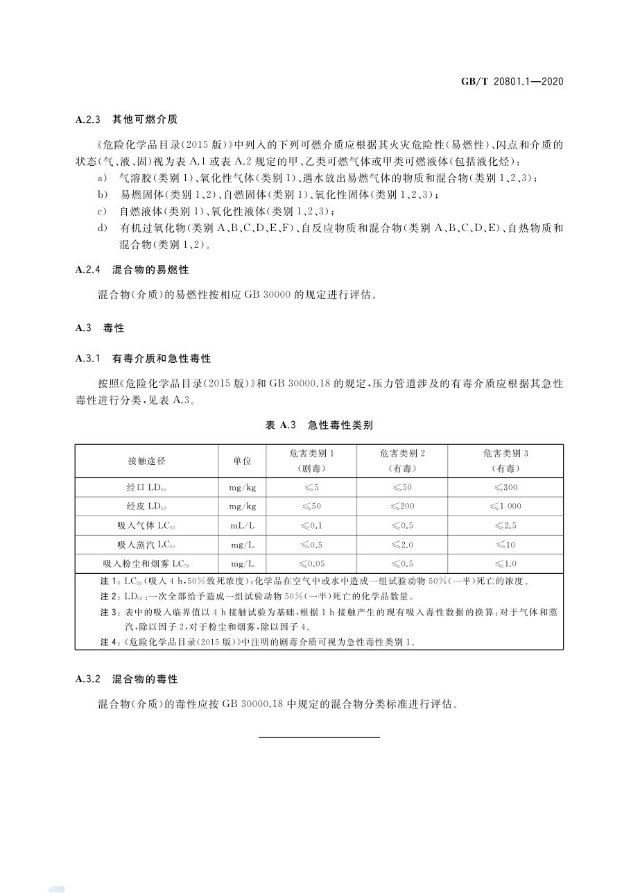
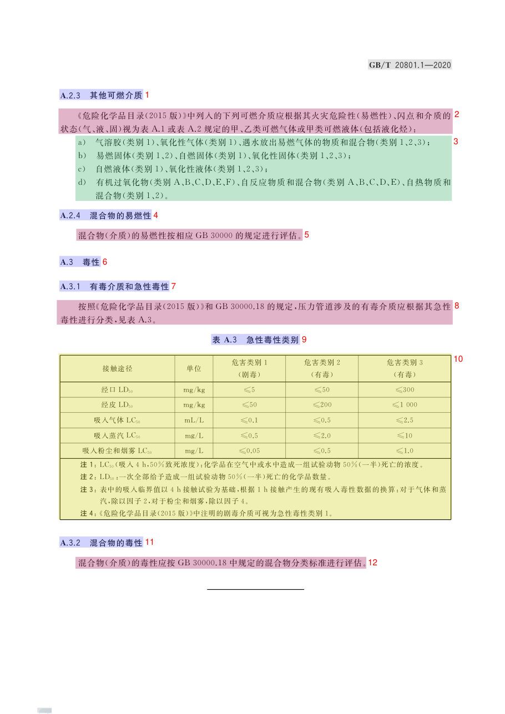
《危险化学品目录(2015版）》中列入的下列可燃介质应根据其火灾危险性(易燃性）、闪点和介质的状态(气、液、固)视为表A.1或表A.2规定的甲、乙类可燃气体或甲类可燃液体(包括液化烃）：
a) 气溶胶（类别1）、氧化性气体（类别1）、遇水放出易燃气体的物质和混合物（类别1、2、3）； b) 易燃固体（类别1、2）、自燃固体（类别1）、氧化性固体（类别1、2、3）； c) 自燃液体（类别1）、氧化性液体（类别1、2、3）； d) 有机过氧化物（类别A、B、C、D、E、F）、自反应物质和混合物（类别A、B、C、D、E）、自热物质和混合物（类别1、2)。
混合物（介质)的易燃性按相应GB30000的规定进行评估。
按照《危险化学品目录（2015版）》和GB30000.18的规定，压力管道涉及的有毒介质应根据其急性毒性进行分类，见表A.3。
接触途径 单位 危害类别1（剧毒） 危害类别2（有毒） 危害类别3（有毒） 经口LD50 mg/kg ≤5 50 ≤300 经皮LD50 mg/kg ≤50 ≤200 ≤1 000 吸入气体LC50 mL/L ≤0.1 ≤0.5 ≤2.5 吸入蒸汽LC50 mg/L ≤0.5 ≤2.0 ≤10 吸入粉尘和烟雾LC50 mg/L ≤0.05 ≤0.5 ≤1.0 注1：LC50（吸入4h，50%致死浓度)：化学品在空气中或水中造成一组试验动物50%（一半)死亡的浓度。注2：LD50：一次全部给予造成一组试验动物50%（一半)死亡的化学品数量。注3：表中的吸入临界值以4h 接触试验为基础，根据1h 接触产生的现有吸入毒性数据的换算：对于气体和蒸汽，除以因子2，对于粉尘和烟雾，除以因子4。注4：《危险化学品目录(2015版）》中注明的剧毒介质可视为急性毒性类别1。
混合物（介质)的毒性应按GB30000.18中规定的混合物分类标准进行评估。